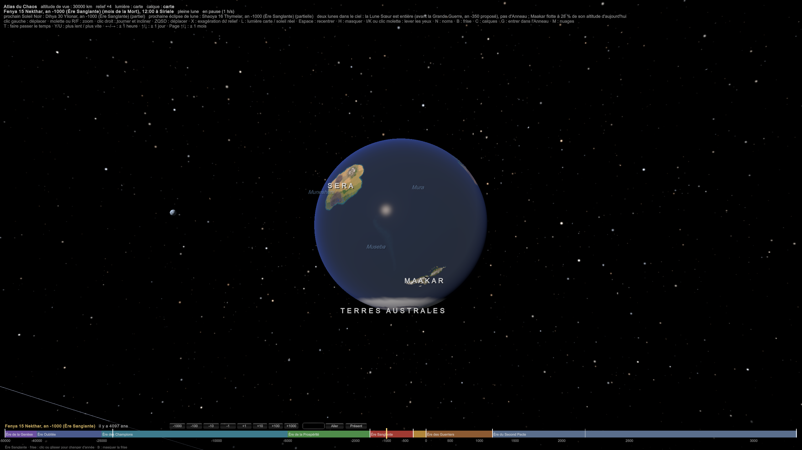
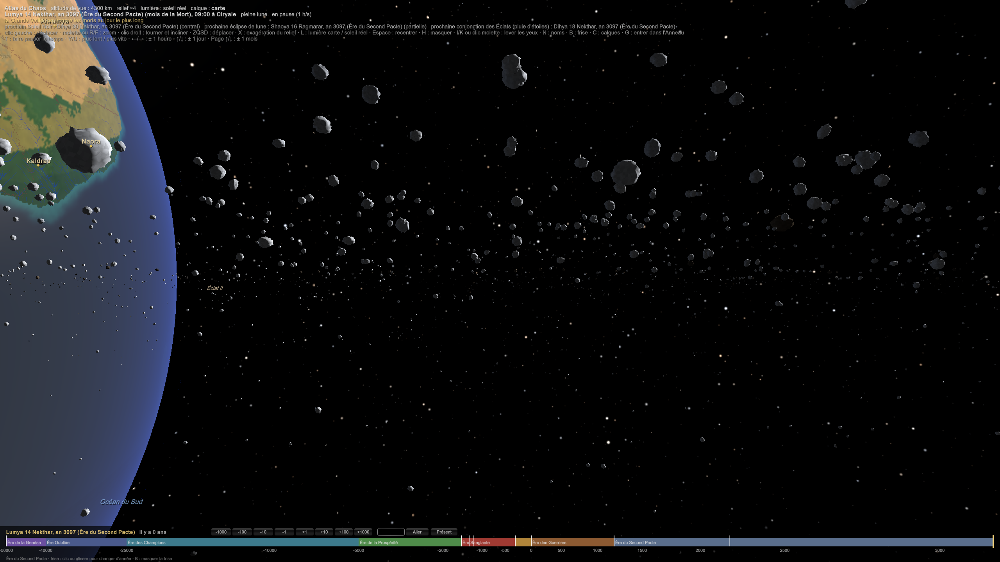

PLA-010 — L'Anneau, la Lune Sœur et les Éclats
- La Lune Sœur : le monde avait deux lunes. La plus petite a été brisée pendant une grande guerre ; ses débris forment l'Anneau.
- Les Éclats : des morceaux de la Lune Sœur survivent en orbite.
- Quand : pendant la Grande Guerre divine, dans l'Ère Sanglante (−1500 à −300). Avant, le monde avait deux lunes et pas d'anneau.
- Qui est mort sur la Lune Sœur : le dieu des Dimensions. Le seul Panthéon détruit est celui des Dimensions (Panthéon 09).
Simulation : SIM-18 L'Anneau et la pluie d'anneau (sim18_anneau.py). Composition des pluies : SIM-16 Maakar flottant.
0. Un anneau jeune, et ce que ça change
- L'Anneau a ≈ 3 450 ans (né vers −350). C'est très jeune pour un anneau : il est encore épais et il perd beaucoup de matière, d'où la pluie d'anneau abondante d'aujourd'hui. Avec le temps, il s'amincira et les pluies faibliront.
- Avant la guerre, Maakar n'avait pas de pluie de météorites. Il ne se nourrissait que de la fuite du sceau céleste (PLA-004 Géologie du monde). Sa roche était moins chargée, et la formule de SIM-16 Maakar flottant (h = L · ln(f₀ / (1 − s))) donne une altitude de ≈ 5,5 km pour s = 0,7 et ≈ 9 km pour s = 0,8, contre 19 à 30 km aujourd'hui (s ≈ 0,97). C'est la Montée : en quelques siècles après la guerre, l'archipel s'est élevé au-dessus du premier ciel. Voir PLA-009 Maakar, l'archipel et ses îles flottantes.
- Avant la rupture, il y a deux lunes, sans Anneau, sans Éclats et sans pluie d'anneau ; après, l'Anneau et les Éclats. La rupture date de −350 (§ 1 bis).
1. Ce qu'était la Lune Sœur
- Une lune différenciée, comme les grosses lunes de Jupiter et de Saturne : un manteau de glace sur un noyau de roche, avec un cœur de fer. Ordre de grandeur : ≈ 200 km de rayon.
- Elle a été brisée près du monde, à moins de ≈ 15 000 à 29 000 km selon la nature des débris (la limite de Roche : plus loin, les débris se seraient regroupés en une nouvelle lune).
Ils sont faits de glace d'eau presque pure (plus de 95 %), en blocs de quelques centimètres à une dizaine de mètres, sur une épaisseur de quelques dizaines de mètres. Leur masse est faible (≈ 1,5 × 10¹⁹ kg, Cassini 2017) et ils seraient jeunes. L'origine la plus citée : une grosse lune dont les marées ont arraché le manteau de glace, tandis que son noyau tombait dans la planète (Canup, 2010).
Ce qui distingue l'Anneau. Les marées seules n'écorchent qu'un manteau de glace. Pour avoir aussi de la roche et du fer dans l'Anneau, il faut que la lune ait été brisée jusqu'au cœur : c'est la signature du combat. Composition : ≈ 75 % de glace, 20 % de roche, 5 % de fer.
1 bis. La Lune Sœur dans le ciel, avant la Grande Guerre
- Son orbite : ≈ 15 700 km du centre du monde, là où tournent aujourd'hui ses Éclats survivants, dans le plan de l'équateur. C'est entre la limite de Roche d'un corps rigide (≈ 12 500 km) et celle d'un corps fluide (≈ 24 000 km). Entière, elle tenait. Brisée, ses débris ne peuvent plus se rassembler : c'est pour ça qu'ils sont restés un anneau.
- Elle fait le tour du monde en 5 h 20, plus vite que le monde ne tourne sur lui-même. Vue du sol, elle se lève à l'ouest et se couche à l'est, deux fois par nuit environ, comme Phobos au-dessus de Mars.
- Sa taille dans le ciel : ≈ 2,5° au zénith, cinq fois la Lune vue de la Terre. Elle est blanche de glace.
- L'année de la rupture : vers −350, juste avant le premier Pacte.
Phobos, la grande lune de Mars, tourne en 7 h 39, plus vite que Mars (24 h 37) : vue du sol, elle se lève à l'ouest. Elle descend lentement et sera brisée par les marées dans quelques dizaines de millions d'années. Mars aura alors un anneau.

2. L'Anneau aujourd'hui
L'Anneau barre le ciel de tous les peuples.
| Valeur | |
|---|---|
| Rayons | 8 500 à 15 500 km du centre (1,3 à 2,4 rayons du monde), plus un annelet à 15 700 km |
| Structure | anneau intérieur ténu, anneau dense, une Division sombre, anneau extérieur, et l'annelet des Éclats |
| Épaisseur | quelques dizaines de mètres à ≈ 100 m |
| Blocs | du centimètre à quelques dizaines de mètres ; beaucoup de petits, peu de gros |
| Période orbitale | 2 h 08 au bord intérieur, 5 h 14 au bord extérieur : vu du sol, l'Anneau défile d'ouest en est |
| Masse actuelle | ≈ 10¹⁷ à 5 × 10¹⁷ kg, soit une lune de 25 à 45 km : moins de 1 % de la Lune Sœur. Le reste est retombé (les pluies des premiers siècles) ou forme les Éclats |
Pas de gaz visible. Un anneau n'a pas d'air : entre les blocs, c'est le vide. Cassini a mesuré autour de ceux de Saturne une « atmosphère » d'oxygène, mais si ténue qu'elle est invisible. Ce qu'on voit de près, ce sont des blocs de glace qui brillent, des blocs de roche plus sombres, de la poussière, et le monde immense à côté.

3. Les Éclats
Trois morceaux du noyau de la Lune Sœur ont survécu. Assez denses et compacts, ils sont hors de la limite de Roche des corps rigides (≈ 11 800 km pour eux) : ils tiennent.
| Rayon | Orbite | Un tour en | Rôle | |
|---|---|---|---|---|
| Éclat I | 30 km | 15 600 km | 5 h 17 | berger intérieur de l'annelet |
| Éclat II | 20 km | 15 790 km | 5 h 23 | berger extérieur de l'annelet |
| Éclat III | 12 km | 13 160 km | 4 h 06 | tient ouverte la Division |
Saturne en a : Prométhée et Pandore encadrent l'anneau F et le tordent à chaque passage ; Pan tient ouverte la division d'Encke. Leur gravité, faible mais répétée, sculpte les bords des anneaux.
- Vus du sol, les Éclats sont des « étoiles » qui traversent le ciel en quelques heures, d'ouest en est, plus vite que tout le reste. Éclat I, le plus brillant, est visible à l'œil nu.
- Leur conjonction : Éclat I, plus proche, tourne un peu plus vite qu'Éclat II. Il le rattrape tous les 12,2 jours. À chaque rencontre, leur gravité secoue l'annelet et le bord de l'Anneau.
4. D'où viennent les météorites de Maakar
C'est la chaîne complète, de l'Anneau au sol :
- La réserve : les blocs de l'Anneau, à l'abri dans sa couche dense et mince.
- Le déclencheur : la conjonction des Éclats. Un bloc qui passe à 100 km d'Éclat I reçoit une poussée de ≈ 5 m/s ; à 50 km, ≈ 20 m/s. Ça suffit pour l'écarter de 15 à 70 km du plan de l'Anneau, alors que l'Anneau ne fait que ≈ 100 m d'épaisseur. Il sort de l'abri.
- Le transport : le champ. Les blocs portent du Chaos (SIM-16 Maakar flottant). Le Chaos réagit au champ électromagnétique, son affinité la plus répandue (PHY-002 Le Chaos et les forces). Un bloc sorti de l'Anneau se comporte donc comme une poussière chargée : il glisse le long des lignes du champ magnétique jusqu'au sol.
- L'arrivée : une bande de latitude. Une ligne de champ qui part de l'Anneau à une distance r touche le sol à la latitude λ telle que cos²λ = R / r. L'anneau dense se projette entre 37° et 45°, au nord comme au sud. Les poussées des Éclats dispersent les blocs de quelques degrés : la bande de pluie régulière va donc de 35° à 45° (PLA-007 Climats régionaux). Le reste de l'Anneau envoie de rares chutes jusqu'à 30° et 50°. Au sud, Maakar ; au nord, les steppes de Khodom.
- Le tri : dans la bande, le champ de Maakar capture surtout ce qui porte du Chaos (SIM-16 Maakar flottant).
Cassini l'a observée : des grains glacés et chargés quittent les anneaux, suivent les lignes du champ magnétique et tombent sur Saturne entre ≈ 25° et 50° de latitude, à raison de plusieurs tonnes par seconde. Dans notre monde, le Chaos joue le rôle de la charge électrique, et des blocs entiers suivent le même chemin.
Le rythme : 2 à 3 pluies par mois. Une conjonction tous les 12,2 jours, c'est 2,5 pluies par mois de 30 jours. Les pluies sont prévisibles : les astronomes de Maakar savent calculer les conjonctions des Éclats.
Le fer. Le fer ne retient pas le Chaos (CHI-004 Les métaux et le Chaos) : seul, il ne suivrait pas le champ. Il descend enrobé dans les blocs de glace et de roche du noyau de la Lune Sœur. La glace éclate haut dans l'air ; le fer, libéré, continue en ligne droite et touche le sol dans la même bande, mais n'importe où : surtout dans l'océan et sur les steppes de Khodom, presque jamais sur Maakar, qui ne le capture pas. C'est l'acier divin.
5. Ce que la Lune Sœur change pour Maakar
Avec ≈ 75 % de glace dans l'Anneau (SIM-16 Maakar flottant) :
| Ce qui tombe sur Maakar | Part |
|---|---|
| Glace (neige d'étoiles, l'eau de Maakar) | 88 % |
| Pierres carbonées (sols fertiles) | 7 % |
| Pierres ordinaires (les catastrophes) | 5 % |
Maakar est donc bien arrosé et peu bombardé par la pierre. Les catastrophes restent régulières : à chaque pluie, il tombe des blocs, et un bloc de pierre de 10 m éclate encore avec la force de plusieurs kilotonnes au plafond du second ciel.
Liens
SIM-18 L'Anneau et la pluie d'anneau · SIM-16 Maakar flottant · PLA-009 Maakar, l'archipel et ses îles flottantes · PLA-004 Géologie du monde · PLA-007 Climats régionaux · PHY-002 Le Chaos et les forces · CHI-004 Les métaux et le Chaos · DIV-005 L'histoire des dieux